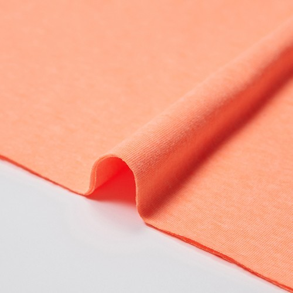
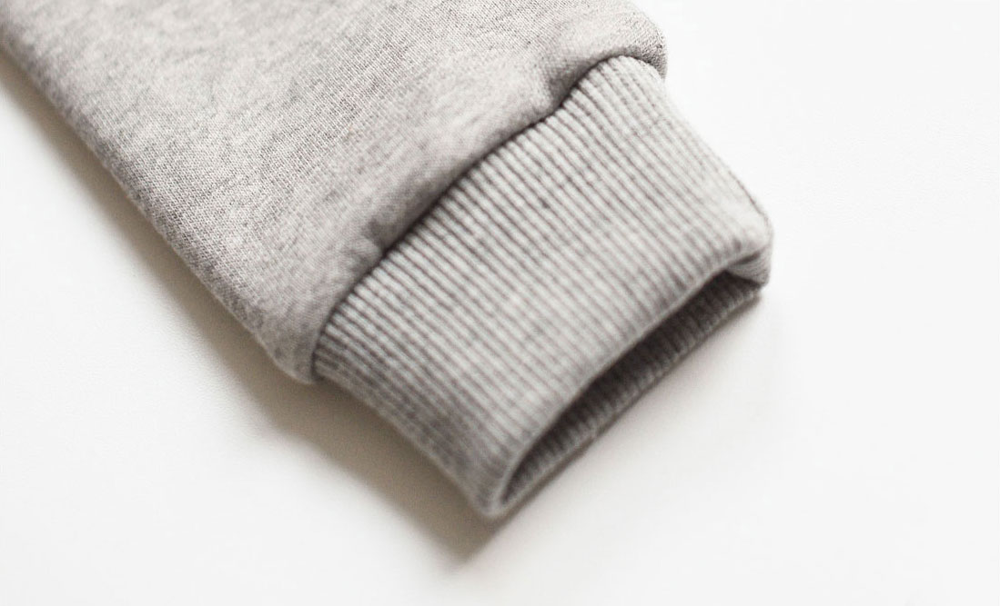
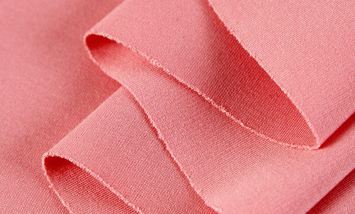
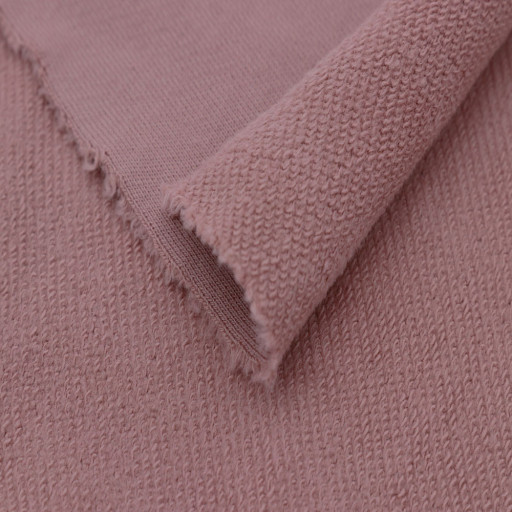

Clothing Fabric
원단 소재 종류
다이마루
우븐
나일론과 폴리에스터
수의 의미
다이마루 란?
일본어로 '다이=둥글다', '마루=크다' 라는 뜻.
큰 원을 뜻하는 단어로, 둥근 환편기계로 짜여진 원단.
싱글

다이마루의 기본이다.
티셔츠에서 가장 많이 사용되며, 가로방향으로 신축성이 있다.
10/20/30/40수 등을 기본으로 취급한다.
한쪽 면만 겉면으로 활용할 수 있게 제작되어지고 스판기가 적다.
시보리

목둘레나 소매/밑단에 활용되는 원단으로 골지짜임이 특징이다.
신축성이 좋으며, 비니에도 쓰인다.
분또

밀도가 높고 쫀쫀한 신축성이 특징인 원단이다.
자켓, 레깅스, 바지, 원피스, 체육복 등으로 활용된다.
쭈리

앞면은 가는 실을 사용한 싱글조직으로 짜여 있고
뒷면은 두꺼운 실을 사용한 루프조직으로 되어있다.
직물이 두껍고 보온성이 매우 높아서 가을, 겨울용 의류에 사용된다.